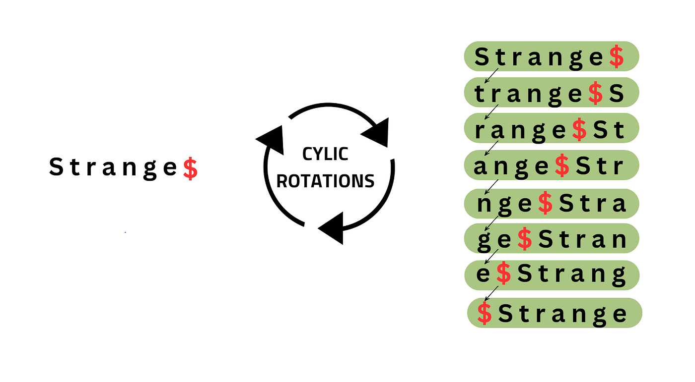

String Manipulation Algorithms
06.11.2025 Here is only covered for strictly-lowercase strings. If that is a problem for a specific case, be aware!
Reversing a string
Using backward traversal – O(n) Time and O(n) Space
The idea is to start at the last character of the string and move backward, appending each character to a new string res. This new string res will contain the characters of the original string in reverse order.
def reverse_string(string):
res = []
for i in range(len(string) - 1, -1, -1):
res.append(string[i])
return ''.join(res)
Using Two Pointers - O(n) Time and O(1) Space
The idea is to maintain two pointers: left and right, such that left points to the beginning of the string and right points to the end of the string.
While left pointer is less than the right pointer, swap the characters at these two positions. After each swap, increment the left pointer and decrement the right pointer to move towards the center of the string. This will swap all the characters in the first half with their corresponding character in the second half.
def reverse_string(s):
left = 0
right = len(s) - 1
s = list(s)
while left < right:
s[left], s[right] = s[right], s[left]
left += 1
right -= 1
return ''.join(s)
Using Recursion - O(n) Time and O(n) Space
The idea is to use recursion and define a recursive function that takes a string as input and reverses it. Inside the recursive function,
- Swap the first and last element.
- Recursively call the function with the remaining substring.
def reverseStringRec(arr, l, r):
if l >= r:
return
arr[l], arr[r] = arr[r], arr[l]
reverseStringRec(arr, l + 1, r - 1)
def reverseString(s):
arr = list(s)
reverseStringRec(arr, 0, len(arr) - 1)
return ''.join(arr)
Using Stack - O(n) Time and O(n) Space
The idea is to use stack for reversing a string. So, when we push all the characters of a string into the stack, the last character becomes the first one to pop.
def reverseString(s):
stack = []
for char in s:
stack.append(char)
rev = [''] * len(s)
for i in range(len(s)):
rev[i] = stack.pop()
return ''.join(rev)
Python built-in - Complexity depends on the used method
You can also convert the string into an arr or something like that and than reverse it
def reverseString(s):
# Reverse the string using slicing
return s[::-1]
Reverse Words in a String
Same methods as for reversing the string, but you split the words (" ") and than reverse on that array.
Reversing a word
Same methods as for reversing a string
Rotations

Generate all Rotations
def get_rotations(s):
rotations = []*len(s)
for i in range(len(s)):
rotations[i] = s[i:] + s[:i]
return rotations
Check if strings are Rotations of each other
def is_rotation(s1, s2):
if len(s1) != len(s2):
return false
for i in range(len(s1)):
if s1[i] == s2[1]:
if s1[i:] + s1[:i] == s2:
return True
return False
Permutations (Rearangement of the String/new order but same chars)
def generate_permutations(set_beg, s):
permutations = []
if len(s) <= 1:
return set_beg + s
for i in range(len(s)):
permutations += generate_permutations(set_beg+=s[i], s[:i] + s[i+1:])
return permutations
Removing duplicates
def remove_duplicated_chars(s):
occured = [False] * 26
new_s = ""
for c in s:
i = c - 'a'
if occured[i] == False:
new_s += c
occured[i] = True
return new_s
Anagrams
Other option would be to have a dict that stores how many times the letter occurs.
def is_anagram(s1, s2):
frequency = [0] * 26
for v in s1:
frequency[v - 'a'] += 1
for v in s2:
frequency[v - 'a'] -= 1
for i in frequency :
if i != 0:
return False
return True
Palindroms
def is_palindrom(s):
l = 0
r = len(s) - 1
while l < r:
if s[l] != s[r]:
return False
return True
Most repeated character
def get_most_repeated_char(s):
frequency = [0] * 26
for c in s:
frequency[c - 'a'] += 1
max_v = frequency[0]
max_i = 0
for i in range(26):
if(max_v > frequency[i]):
max_v = frequency[i]
max_i = i
return char('a' + i)